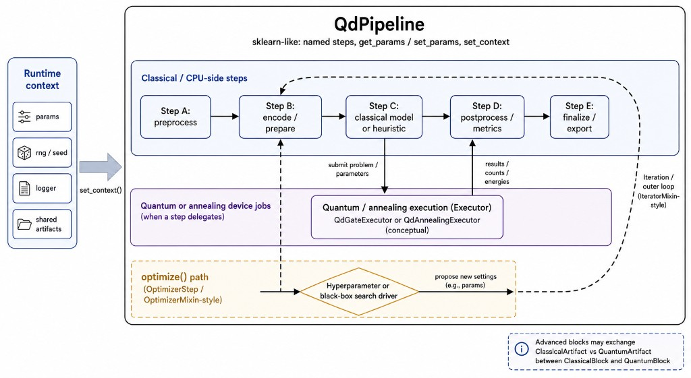
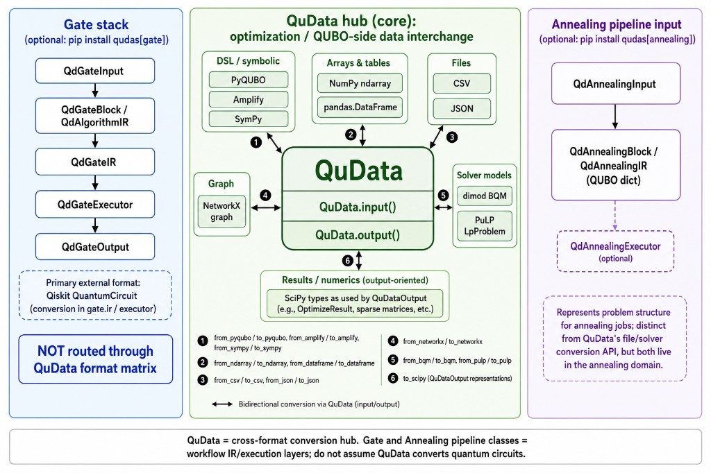

Welcome to Qudas’s documentation!#
Qudas は、量子計算と古典最適化をまたいだワークフローを組み立てるための Python ライブラリです。役割は大きく次の三つに分かれます。
パイプライン（:class:`~qudas.pipeline.QdPipeline`） scikit-learn に近い慣習（名前付きステップ、
get_params/set_params、ランタイムへのset_context）で、前処理・符号化・古典側モデル・後処理といった 古典 CPU 上のステップ列 を記述します。ステップが量子／アニーリング実行へ問題を委譲し、結果（カウント・エネルギーなど）を後段へ返す流れを想定した構成です。外側の反復（IteratorMixin系）や、ハイパーパラメータ探索（OptimizerMixin/OptimizerStep系）から準備段へ戻る経路も置けます。QuData（形式変換ハブ） 最適化・QUBO まわりで使う表現（NumPy、pandas、CSV／JSON、PyQUBO、Amplify、SymPy、NetworkX、dimod BQM、PuLP など）の間を、
QuData.input()とQuData.output()、およびfrom_*／to_*で行き来させます。量子回路そのものを QuData が変換するわけではありません（回路は下記ゲートスタック側で扱います）。ゲート方式・アニーリング方式（オプションの追加パッケージ）
qudas[gate]ではゲート用の Input / Block・IR / Executor / Output（主に Qiskit 連携）。qudas[annealing]ではアニーリング用の同様のパイプライン層と、QUBO 辞書ベースの IR です。いずれも QuData のファイル／ソルバ変換 API とは別レイヤー ですが、ドメインとしてはアニーリング周りで併用しやすい構成になっています。
インストールの目安:
pip install qudas… コア（NumPy + matplotlib）pip install qudas[annealing]… QuData 変換に使うライブラリ一式（dimod、Amplify、PyQUBO など）pip install qudas[gate]… Qiskit ベースのゲート実行pip install qudas[all]… 上記をまとめて
詳しい手順とコード例は Quickstart を参照してください。
パイプラインの概念図#
{kind=link}

QdPipeline のイメージ。左のランタイムコンテキスト（パラメータ、乱数、ロガー、共有成果物）を set_context で受け取り、古典ステップの列のなかで量子／アニーリング Executor への委譲や、最適化ループからのフィードバックを表現します。#
QuData とゲート／アニーリングの関係#
{kind=link}

QuData を中心としたデータの流れ（v0.2.1 時点の整理）。緑のハブが最適化・QUBO 側の相互変換、青・紫はそれぞれゲート用・アニーリング用のワークフロー（IR／実行）で、ゲートスタックは QuData の行列ハブを経由しません。#
コアとデータ変換
ゲート方式（オプション）
アニーリング方式（オプション）
「本ライブラリは、国立研究開発法人新エネルギー・産業技術総合開発機構（ＮＥＤＯ）の委託業務の結果得られたものです。」